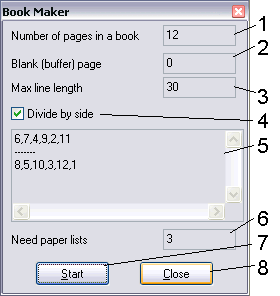

Back
~BookGen
Description:
The programs is made for fast and simple creation of the books under MicroSoft Word 97 and 2000 and others.
Probably, the similar algorithm can be applied and to other programs, but it does not test. I have no English version,
so there can be some differences between my translation and original.
Soluble task: to create new document with an opportunity of a printing as the book (as in a printing house), not
using additional software or special printer. For work it is necessary to do the following steps:
- Transform the document to a format À5x2 (by default, everyone work with À4, or Letter). For this purpose
execute a File > Parameters of page > Size of paper. Here specify: the size of a paper - À4, orientation - album.
Now proceed on page "Model and Source of a paper" and establish the necessary parameters. Proceed on page "Field"
and check box "2 pages on a sheet". Establish the necessary meanings of fields. Here my recommendation - reduce
meanings, as far as it is possible, but not less than 1 centimeter. Apply adjustments by the button OK. Certainly,
if you use it on ready document, some formatting can be broken. The document needs be to be overlooked and to be
correctly reformatted, if something goes wrong. For better performance, use Preview mode (in the left bottom corner
of a document window there are three buttons, third on the right need to be pressed).
- After all operations, find out quantity of pages of the text in status line. Start BookMaker and enter it into
field "Number of pages in a book". Pay attention, that by default in a field "Blank (buffer) page" stands number 0.
Therefore, if the number of pages in your book is not multiple 4, the program will give out the warning message and
the sequence will not generate. In this case, it is necessary to create in the document last empty page (but to not
include it in total, for example, if in your document 9 pages, after addition of buffer page, you receive 10 pages
in the document, but to enter it is necessary 9, instead of 10). For addition of empty page, establish the cursor
on the end of the document and execute an Insert > Break > New page > OK. Now instead of 0 in a field "Buffer page"
enter number of empty page (in our example it is 10). By default in a field "Max line length" stands 30. It means,
that the final combination will be broken on lines of length which is not exceeding specified. If you want to finish
carry of lines in Word faster, increase meaning(importance), but not more than 250.
- Press "Create". In a text field some lines will appear. Now for printing of the book it is necessary to count
quantity of sheets specified in appropriate field and to put them in the printer. I recommend to leave check in box
"Divide by side".
- Copy lines up to divider and in Word execute a File > Print and into a field "Number" enter the copied line.
Start printing. When printing finishes, turn all pages along the short side and again insert into the printer,
then send the stayed pages to a printer.
- Sew the total book by a stapler!
Features:
- Do not close program while not all lines was passed to Word.
- If you use page headers, I strongly recommend to delete page headers on buffer page, or to supplement the
document with empty pages up to number of pages, multiple 4 manually.
- Before you begin print real documents, I recommend you to train on sample document (for example, four-page),
to know how to overturn pages and to avoid sad consequences connected to damage of a paper. The program is
oriented to operation with the ink-jet printer, and operation with laser printer there can be unexpected
complications.
- Do not confuse a line by places! It will result in impossibility of collection of the book.

- Specify here number of pages in the book.
- Specify here number of empty page. If the number of pages in the document is multiple 4, it is possible to leave 0.
- Maximum length of string(line) in an output field.
- It is desirable to leave this check. Then you should print out all pages of the first group, then invert pages
and print the rest. Differently it is necessary to count number of pages (see item 6)
- The field, whence is necessary to copy line by line sequences for printing.
- It is necessary to put number of sheets, which in the printer. If checkbox 4 is checked, it is possible to
not count sheets manually.
- Start button. After pressing, the field 5 will be filled by the correct data. Also it is possible to press
Enter in input fields.
- Exit with saving of parameters. Also it is possible to press Esc.